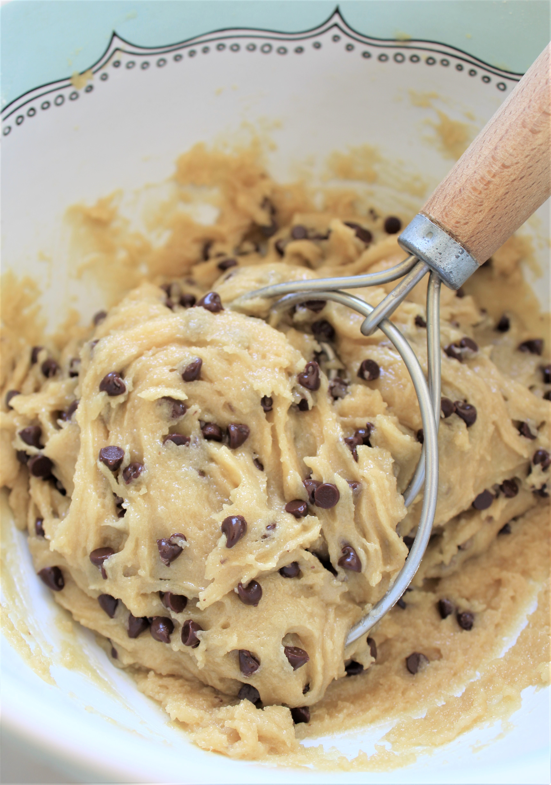

Chocolate Chip Cookies

This is by far my favorite recipe for chocolate chip cookies and I'm sure you'll agree! They are soft and chewy, plus has lots of chocolate chips! They are "melt in your mouth" delicious! Perfect with a tall glass of milk on a rainy day or a simple dessert with company.
Ingredients:
- 3/4 cup butter
- 1 cup brown sugar
- 1/2 cup white sugar
- 1 tsp vanilla
- 2 eggs
- 2 cups flour
- q tsp baking soda
- 1 tsp salt
- 1 cup chocolate chips
Steps
- Preheat oven to 350°F
- Use mixer to cream butter, sugar, vanilla and eggs
- Add the dry ingredients and mix 
- Add chocolate chips
- Form cookies on cookie sheet
- Bake for about 10 minutes